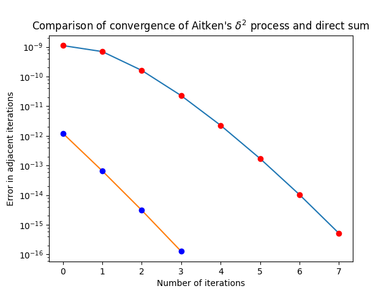
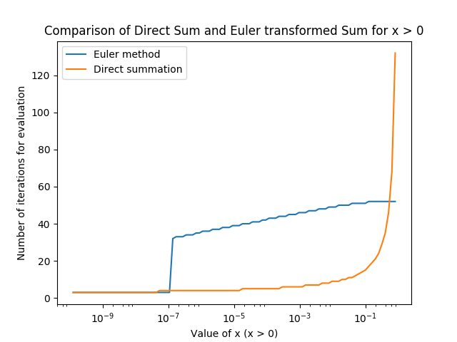
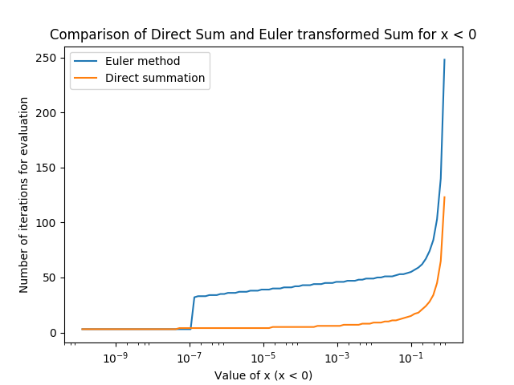
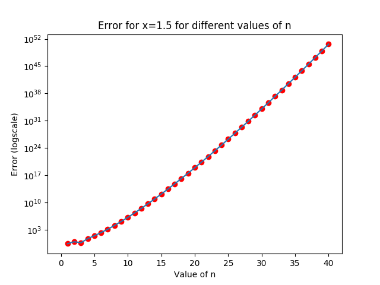
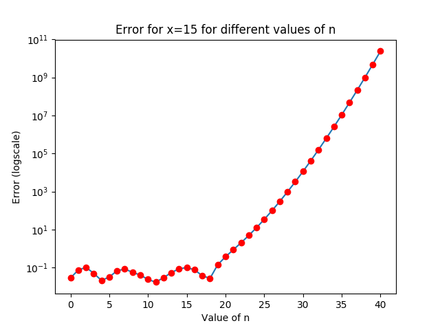
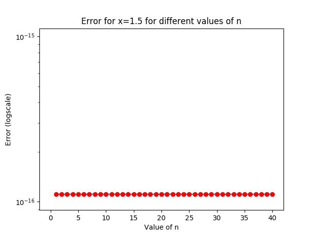
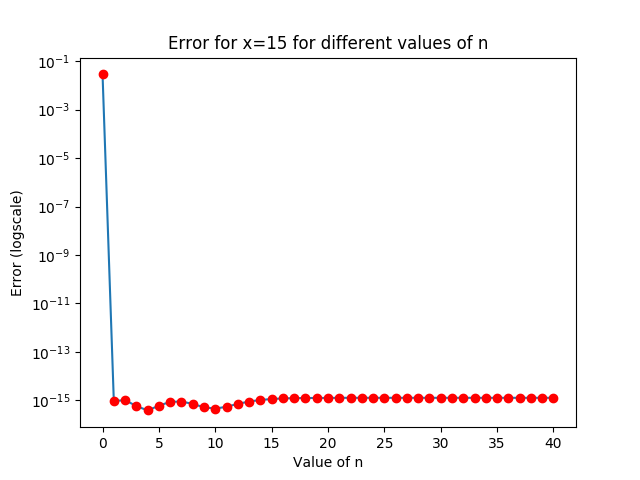
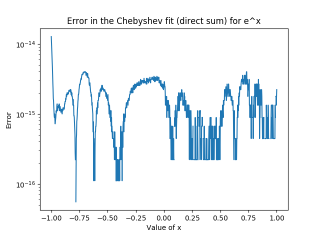
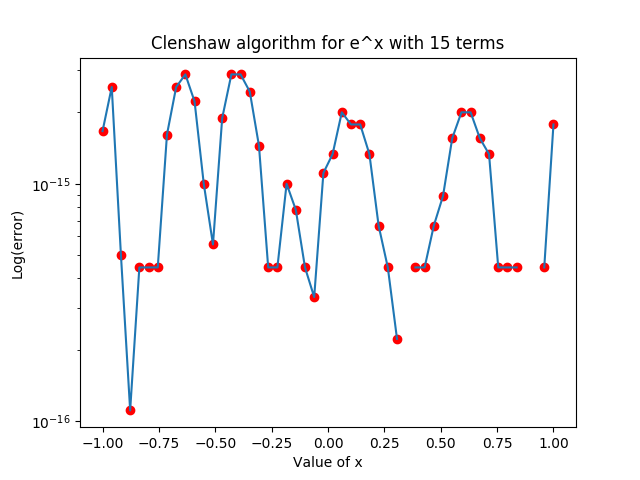

EE5011: Error Analysis and Clenshaw Algorithm
Rohan Rao, EE14B118
1 Programming Assignment (Summing Series)
1.1 Aitken’s δ2 − process
In(x) = Jn(jx) = ∞⎲⎳k = 0(( − 1)k(jx ⁄ 2)n + 2k)/(k!(n + k)!) = ⎛⎝(jx)/(2)⎞⎠n∞⎲⎳k = 0((x2 ⁄ 4)k)/(k!(k + n)!)
def kterm(x,k,n):
...: return (x**2/4.0)**k/(fact(k)*fact(k+n))
def sumn(x,n):
...: err=[]
...: s=kterm(x,0,n)*(1j*x/2)**n
...: for k in range(1,1000):
...: a=kterm(x,k,n)*(1j*x/2)**n
...: err.append(a-kterm(x,k-1,n)*(1j*x/2)**n)
...: if abs(err[-1])<1e-15:
...: break
...: s+=a
...: return s,k+1,np.array(err)
def calcAxn(x2,x1,x0):
...: return x2-((x2-x1)**2/((x2-x1)-(x1-x0)))
def aitken(x,n):
...: ax=[]; psum=[]; err=[]
...: psum.append(part(x,0,n))
...: for k in range(1,100):
...: psum.append(psum[-1]+part(x,k,n))
...: if(len(psum)>=3):
...: ax.append(calcAxn(psum[-1],psum[-2],psum[-3]))
...: if(len(ax)>2):
...: err.append(abs(ax[-1]-ax[-2]))
...: if err[-1]<1e-15:
...: break
...:
...: return np.array(err)
Here, kterm defines the term after the summation symbol in the final formula on the RHS. This is used directly in the sumn function to evaluate the sum until the errror is below a tolerance (chosen at random) to be 10 − 15. The calcAxn function uses the Aitken δ2 method by considering three partial sum terms at a time to obtain an accelerated convergence. The plot of the convergence of error of the above two methods is as shown below.

The curve on top is that of the direct summation, whereas the curve below it is the result of the Aitken method. This graph was evaluated for the value of x=6.1 and n=20. This gives a value of 3.092897418*10 − 9. The value was compared with the one obtained from scipy.special.jn and is accurate.
2 Euler’s transformation
∞⎲⎳n = 1( − 1)n(xn)/(n) = − ln(1 + x)
Euler’s transformation is intended to be applied to an alternating series, as follows:
∞⎲⎳n = 0( − 1)nan = ∞⎲⎳n = 0( − 1)n(∆na0)/(2n + 1)
where ∆ is the forward difference operator:
∆na0 = n⎲⎳k = 0( − 1)k(nk)an − k
def xterm(x,n):
...: return (-x)**n/n
The above function returns the n-th term of the series to be summed.
def neglnx(y):
...: s=xterm(y,1);i=2
...: val=xterm(y,1)
...: while i<1e10:
...: if abs(val-xterm(y,i))<1e-15:
...: break
...: val=xterm(y,i)
...: s+=val
...: i+=1
...: return s,i
This function directly sums the series upto a tolerance of 10 − 15.
def fwdiff(x,n):
...: s=0
...: for k in range(n):
...: s+=(-1)**k*an(x,n-k)*scipy.misc.comb(n,k)/2**(n+1)
...: return s
This is the forward difference function as defined above, but modified to exclude k=n, since that would result in a divide-by-zero operation due to the nature of an.
def Euler(x):
...: s=fwdiff(x,0)/2
...: val=s
...: for i in range(1,100000):
...: val2=(-1)**i*fwdiff(x,i)
...: if(abs(val2-val)<1e-15):
...: break
...: s+=val
...: val=val2
...: return s,i+1
Finally, this function sums the Euler transformed series, as defined above, to a tolerance of 10 − 15. The plots are as shown below:

It can be seen that the direct summing method dominates up until x=0.5, after which the Euler transformation is significantly better than the direct summation method.

For x<0, it can be seen that the direct summation method is better than the Euler transformation method.
3 Quadratic Equation
4 Stable and unstable series
The series to be summed is as follows:
S(x) = 40⎲⎳n = 0(1)/(n + 1)Jn(x)
The function Jn(x) is the nth term of the Bessel series.
A Python function to compute the sum (exact solution) is as follows:
from scipy.special import jn
def S(x,num):
total=0
for i in range(num+1):
total+=jn(i,x)/(i+1)
return total
This gives the exact value of S(1.5,40) = 0.88608893929096932 and S(15,40) = 0.12377300077343459.
The recursion formula for the Bessel-like functions is as follows:
Zn(x) = (2(n − 1))/(x)Zn − 1(x) − Zn − 2(x)
where Zn(x) is either Jn(x) or Yn(x) or a linear combination of the two.
For computing the series using a forward recursion, we can use the initial condition of J − 1(x) = 0 and J0(x) obtained from scipy.special.jn. Then we can use these in a loop with dynamic programming to obtain the two sequences for x=1.5 and x=15.
vals1p5=[0,jn(0,1.5)]
for i in range(50):
vals1p5.append(vals1p5[-1]*2*i/1.5-vals1p5[-2])
del vals1p5[0]
vals15=[0,jn(0,15)]
for i in range(50):
vals15.append(vals15[-1]*2*i/15-vals15[-2])
del vals15[0]
The above two sequences obtained from forward recursion can be used to calculate the sum of the above series, with the error being checked at every stage.
n=np.array(range(41))
fwd15=abs(np.cumsum(vals15/(n+1)))
fwd1p5=abs(np.cumsum(vals1p5/(n+1)))
err1p5=s1(1.5,n)-fwd1p5[:41]
err15=s1(15,n)-fwd15[:41]
The plots obtained are as follows:

Error grows exponentially (semilog scale) for n ~ 3.

Error grows exponentially beyond n ~ 18.
This shows that the series is unstable for forward recursion when n > x. The different values of x=1.5 and x=15 show the variation in the error plot as above.
Using the following recursion for reversed calculation:
Zn(x) = (2(n + 1))/(x)Zn + 1(x) − Zn + 2(x)
vals1p5=[0,1] #J61, J60
for i in range(60):
vals1p5.append(2*(60-i)*vals1p5[-1]/1.5-vals1p5[-2])
vals15=[0,1]
for i in range(60):
vals15.append(2*(60-i)*vals15[-1]/15.0-vals15[-2])
#NORMALIZE
vals15=np.array(vals15)
vals15/=vals15[-1]
vals1p5=np.array(vals1p5)
vals1p5/=vals1p5[-1]
#Reverse
vals1p5=vals1p5[::-1][:41]
vals15=vals15[::-1][:41]
n=np.array(range(41))
fwd15=abs(np.cumsum(vals15/(n+1)))
fwd1p5=abs(np.cumsum(vals1p5/(n+1)))
err1p5=s1(1.5,n)-fwd1p5[:41]
err15=s1(15,n)-fwd15[:41]
The plots obtained are as follows:


This shows that using the reverse recursion for obtaining the series sum can significantly reduce the error, and keep the series stable.
4.1 Clenshaw Algorithm
The Clenshaw algorithm implemented in Python, is as follows:
#Clenshaw Algorithm:
#S(x)=sum(0 to n, c_k*F_k(x))
#F_(n+1)(x)=alpha(n,x)*F_n(x)+beta(n,x)*F_(n-1)(x)
import numpy as np
import scipy.special
def alpha(i,x):
#return x/(2*(i+1))
return 2*x
def beta(i,x):
#return x**2/(2*(i+1)*i)
return -1
def F(i,x):
if(i==0):
return 1
if(i==1):
return x
def a(i):
return coeff[i]
#return 1
def S(F,alpha,beta,a,x,n):
b=np.zeros(n+3)
b[-1]=b[-2]=0
for i in range(n,0,-1):
b[i]=a(i)+alpha(i,x)*b[i+1]+beta(i+1,x)*b[i+2]
return F(0,x)*a(0)+F(1,x)*b[1]+beta(1,x)*F(0,x)*b[2]
Using the Chebyshev sum for ex requires the Chebyshev coefficients, which can be calculated using the procedure below:
def chebfit(xdata,ydata,x):
...: n=len(xdata)
...: xmax=max(xdata)
...: xmin=min(xdata)
...: xdata=(2*xdata-xmax-xmin)/(xmax-xmin)
...: T=np.zeros((n,n))
...: T[:,0]=1
...: T[:,1]=xdata
...: for j in range(2,n):
...: T[:,j]=2*xdata*T[:,j-1]-T[:,j-2]
...: b=np.dot(np.linalg.inv(T),ydata)
...: x=(2*x-xmax-xmin)/(xmax-xmin)
...: y=np.zeros(len(x))
...: for j in range(n):
...: y=y+b[j]*cos((j-1)*arccos(x));
...: return y,b
This can also be computed using the np.polynomial.chebyshev.chebfit function in Numpy.
coeff=np.polynomial.chebyshev.chebfit(x,y,20)
The coefficients can then be used to obtain the function by using the Chebyshev recursive formula:
def chebpoly(n,x):
...: if(n==0):
...: return 1
...: if(n==1):
...: return x
...: return 2*x*chebpoly(n-1,x)-chebpoly(n-2,x)
def chebapproxfn(coeff,x):
...: n=len(coeff)
...: s=0
...: for i in range(n):
...: s+=coeff[i]*chebpoly(i,x)
...: return s
The error obtained using this direct method is of the order of 10 − 14.

Upon using the Clenshaw algorithm, the following plot is obtained.

The spaces are where the error is zero, so log(error) is not defined.
This shows that the Clenshaw algorithm gives an error that is better than the direct sum obtained from above.
The mean and standard deviation of the plots above is as follows:
Direct Sum:
mean = 3.835e-15
std = 1.044e-14
Clenshaw Sum:
mean = 1.141e-15
std = 8.393e-16
Clearly, the Clenshaw sum has a 3 times lower mean and an order of magnitude better standard deviation. In the case of the series S(x), it doesn’t matter for the Clenshaw algorithm whether it is stable in forward or backward direction. So I will use the forward series to ensure it works.
Zn + 1(x) = (2n)/(x)Zn(x) − Zn − 1(x)
When I tried the same Clenshaw algorithm for this series, it was giving the wrong answer, and I think something is wrong.